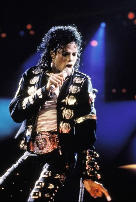

Michael Jackson
"King of Pop"

Michael Jackson performs during halftime of a 52-17 Dallas Cowboys win over the Buffalo Bills in Super Bowl XXVII on
January 31, 1993 at Rose Bowl in Pasadena California.
Here's a time line of Michael Jackson's life:
- 1958 born in Gary, Indiana.
- 1964 Michael joined the Jackson Brothers a band formed by their father. He then began sharing lead vocals with brother Jermaine, and the group's name was changed to the Jackson 5.
- 1965 The group won a talent show; Michael performed the dance to Robert Parker's 1965 song "Barefootin'" and sang the
Temptations' "My Girl". The Jackson 5 recorded several songs for a Gary record label, Steeltown Records; their first single, "Big Boy"
- 1981-1983 Jackson recorded with Queen singer Freddie Mercury from 1981 to 1983, recording demos of "State of Shock".
"There Must Be More to Life Than This".
- 1984 The Victory Tour headlined the Jacksons and showcased Jackson's new solo material to more than two million Americans. It was the last tour he did with his brothers.
- 1987–1990 Jackson's first album in five years, Bad (1987), was highly anticipated, with the industry expecting another major
success. It became the first album to produce five US number-one singles: "I Just Can't Stop Loving You", "Bad",
"The Way You Make Me Feel", "Man in the Mirror", and "Dirty Diana". Another song, "Smooth Criminal", peaked at number
seven. Bad won the 1988 Grammy for Best Engineered Recording – Non Classical and the 1990 Grammy Award for Best
Music Video, Short Form for "Leave Me Alone". Jackson won an Award of Achievement at the American Music Awards
in 1989 after Bad generated five number-one singles, became the first album to top the charts in 25 countries and the
best-selling album worldwide in 1987 and 1988. By 2012, it had sold between 30 and 45 million copies
worldwide.
- 1991 Jackson renewed his contract with Sony for $65 million (equivalent to $123,504,764 in 2020), a record-breaking
deal, beating Neil Diamond's renewal contract with Columbia Records. In 1991, he released his eighth album,
Dangerous, co-produced with Teddy Riley. It was certified seven times platinum in the US, and by 2008 had sold 30
million copies worldwide. In the US, the first single, "Black or White", was the album's highest charting
song; it was number one on the Billboard Hot 100 for seven weeks and achieved similar chart performances worldwide.
The second single, "Remember the Time" peaked at number three on the Billboard Hot 100 singles chart.
- 1993 Jackson performed at the Super Bowl XXVII halftime show in Pasadena, California.
- 1995 Jackson released the double album HIStory: Past, Present and Future, Book I. The first disc, HIStory Begins, is a
greatest hits album (reissued in 2001 as Greatest Hits: HIStory, Volume I). The second disc, HIStory Continues, contains
13 original songs and two cover versions. The album debuted at number one on the charts and has been certified for seven
million shipments in the US It is the best-selling multi-disc album of all time, with 20 million copies (40
million units) sold worldwide. HIStory received a Grammy nomination for Album of the Year.
- 1997-2001 Jackson worked on his tenth solo album, Invincible, which cost $30 million to record. In June 1999, Jackson joined Luciano Pavarotti for a War Child benefit concert in Modena, Italy. The show raised a million dollars for refugees of
the Kosovo War, and additional funds for the children of Guatemala.
- 2006 Jackson invited an Access Hollywood camera crew into the studio in Westmeath, and MSNBC reported that he was working on
a new album, produced by will.i.am. On November 15, Jackson briefly performed "We Are the World" at the World Music
Awards in London and accepted the Diamond Award honoring the sale of over 100 million records. The event was Jackson's
last public performance in his lifetime. He returned to the U.S. in December 2006, settling in Las Vegas, and
attended James Brown's funeral in Augusta, Georgia later that month, where he gave a eulogy calling Brown his greatest inspiration.
- 2009 Jackson died from cardiac arrest. Jackson's memorial was held on July 7, 2009, at the Staples Center in Los Angeles, preceded by a private family service
at Forest Lawn Memorial Park's Hall of Liberty. Over 1.6 million fans applied for tickets to the memorial; the 8,750
recipients were drawn at random, and each received two tickets. The memorial service was one of the most watched
events in streaming history, with an estimated US audience of 31.1 million.
Read more about The King of Pop.
A star can never die. It just turns into a smile and melts back into the cosmic music, the dance of life.
-Michael Jackson